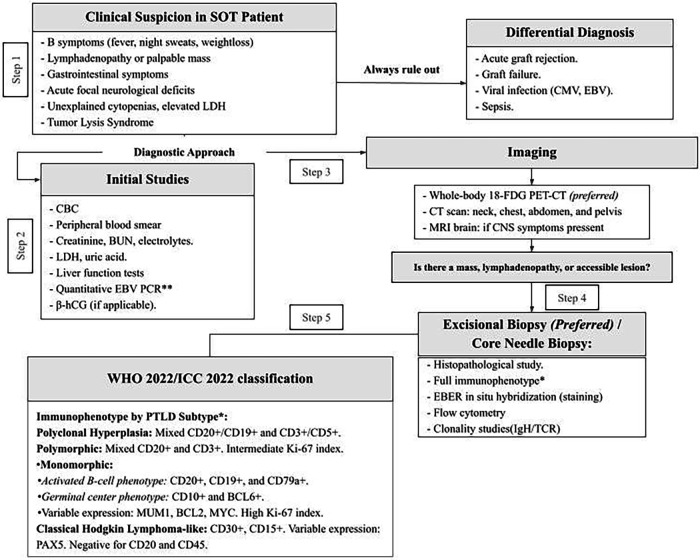
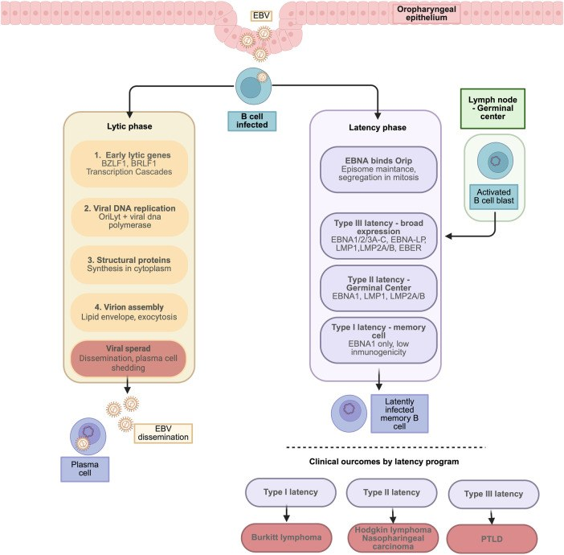
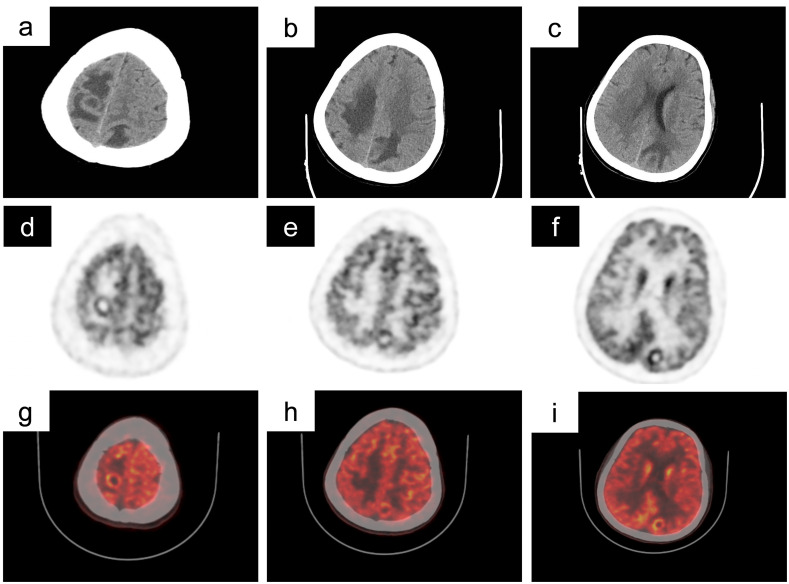

3054 — PTLD ở trẻ sau ghép tạng: EBV-DNA, hình ảnh đa cơ quan và khi nào sinh thiết
Tags: pattern:hach-to pattern:khoi-manh-ghep pattern:ton-thuong-nao vung:hach vung:than-ghep protocol:PET-CT protocol:EBV-DNA
Mức chắc chắn (certainty): tổng hợp y văn — đồng thuận IPTA (nhi khoa) + tổng quan; bằng chứng chủ yếu từ đoàn hệ và ca lâm sàng.
1. Tổng quan — vì sao trẻ ghép tạng dễ PTLD
Cơ chế: thuốc ức chế miễn dịch làm mất kiểm soát EBV → tế bào B nhiễm EBV tăng sinh. Ở PTLD, EBV tồn tại latency type III, biểu hiện LMP1 và EBNA2 — hai protein thúc đẩy tăng sinh và chống apoptosis (PMC13385102).
Dịch tễ: PTLD sau ghép tạng 1–20% tùy tạng; cao nhất ở ghép ruột/đa tạng, nhiều ca nhất ở ghép thận (vì số lượng lớn). Phân bố hai đỉnh: sớm 12–24 tháng (EBV dương, liên quan ức chế miễn dịch mạnh) và muộn 5–10 năm (nhiều ca EBV âm) (PMC13385102).
TẠI SAO trẻ khác người lớn: trẻ thường EBV âm trước ghép → nhiễm EBV sơ phát sau ghép trong bối cảnh ức chế miễn dịch = nguy cơ cao nhất; ngược lại, PTLD EBV âm vẫn xảy ra (ca ghép thận 8 tuổi, EBV-DNA âm — PMC12973549).
Vì sao hình ảnh quan trọng: PTLD có thể chỉ ở mảnh ghép, chỉ ở hạch, hoặc đa cơ quan (dạ dày–ruột, phổi, não); triệu chứng mơ hồ (sốt, sụt cân, khối). Chẩn đoán không thể chỉ bằng EBV-DNA — cần hình ảnh + mô học.
2. Mẫu hình hình ảnh
- Hạch: to, nhiều ổ, có thể hoại tử; hay gặp hạch cổ/trung thất/bụng; phân biệt với hạch phản ứng sau ghép.
- Mảnh ghép: khối/thâm nhiễm trong thận–gan–tim ghép; không phân biệt được với thải ghép cấp trên hình thái → cần sinh thiết (ca thận ghép: PTLD khu trú mảnh ghép — PMC12973549).
- Ống tiêu hóa: dày thành, loét, khối ruột — dễ nhầm bệnh Crohn/viêm ruột.
- Thần kinh trung ương: tổn thương đa ổ, ngấm thuốc, phù quanh ổ, có thể giống u/áp-xe/viêm; PTLD TKTW 5–15% ca PTLD, tiên lượng xấu (PMC13297823, PMC13283889).
- Phổi: nốt/khối, thâm nhiễm; không đặc hiệu.

3. Ma trận đối chiếu
| Thực thể | Hình ảnh điển hình | Chốt vào (rule-in) | Chốt loại (rule-out) | Xác nhận |
|---|---|---|---|---|
| PTLD | Hạch to nhiều ổ/ khối mảnh ghép/ đa ổ TKTW; PET dương mạnh | EBV-DNA tăng + hạch/khối mới, PET ngấm mạnh; khối trong mảnh ghép | EBV-DNA âm không loại trừ (thể EBV âm); hạch nhỏ đơn độc không loại trừ | Sinh thiết mô học (WHO/ICC) |
| Thải ghép cấp | Mảnh ghép to, phù, giảm tưới máu; không hạch to | Tăng creatinine, mảnh ghép to, đáp ứng corticoid | Không có hạch/khối ngoài mảnh ghép | Sinh thiết mảnh ghép |
| Nhiễm trùng cơ hội | Hạch to, áp-xe, tổn thương não | Sốt, CRP, tác nhân trong máu/DNT | PET dương có thể do viêm — không đặc hiệu | Cấy/PCR + mô học |
| U lympho sau ghép khác/ tăng sinh lành tính | Hạch phản ứng, EBV-DNA thấp | Bối cảnh, theo dõi | Không có mô học | Sinh thiết khi nghi |
4. Protocol & ngưỡng
Theo dõi – chẩn đoán (trẻ ghép tạng):
- EBV-DNA định lượng theo lịch của trung tâm (thường 1–3 tháng/lần năm đầu, sau đó thưa dần); xu hướng tăng quan trọng hơn một giá trị đơn lẻ.
- Siêu âm bụng/mảnh ghép khi có triệu chứng hoặc EBV tăng; CT/MRI khi nghi thâm nhiễm/khối.
- 18F-FDG PET/CT: ưu tiên cho phân giai đoạn ban đầu — độ nhạy 95–100%, độ đặc hiệu 80–95%; chọn ổ ngấm mạnh nhất để sinh thiết, và làm mốc đáp ứng theo Lugano (PMC13385102). Dương tính giả do nhiễm/viêm.
- Sinh thiết sớm, kể cả khi khám lâm sàng không sờ thấy hạch: PET/CT giúp chọn vị trí.
- TKTW: MRI sọ có gadolinium + DWI; nếu tổn thương não đơn độc → cân nhắc sinh thiết não (không chẩn đoán bằng EBV-DNA).
Điều trị (khung):
- Giảm ức chế miễn dịch (RIS) là bước đầu, đặc biệt PTLD khu trú/đa hình.
- Rituximab (CD20+) ± hóa trị (CPR: cyclophosphamide–prednisolone–rituximab) cho thể monomorphic; ca thận ghép khu trú mảnh ghép đạt lui bệnh hoàn toàn trên PET-CT, giữ chức năng ghép 5 năm (PMC12973549).
- PTLD TKTW: không có chuẩn; phối hợp RIS + rituximab/hóa trị ± xạ; tiên lượng xấu (PMC13071681).
- Theo dõi: PET-CT/Lugano sau điều trị; EBV-DNA; chức năng mảnh ghép.
flowchart TD
A[Trẻ ghép tạng: sốt/sụt cân/hạch to] --> B[EBV-DNA + siêu âm]
B --> C{Nghi PTLD?}
C -- Có --> D[PET-CT phân giai đoạn + chọn ổ sinh thiết]
D --> E[Sinh thiết: mô học WHO/ICC]
E --> F{Loại PTLD}
F -- Đa hình/khu trú --> G[Giảm ức chế miễn dịch]
F -- Monomorphic CD20+ --> H[Rituximab ± hóa trị]
G --> I[Đánh giá lại PET-CT + EBV-DNA]
H --> I
I --> J{Còn bệnh?}
J -- Có --> K[Điều trị bậc 2: hóa trị/CAR-T/EBV-CTL]
J -- Không --> L[Theo dõi dài hạn]
5. Biến thể & cạm bẫy
- EBV-DNA âm không loại trừ PTLD: ca điển hình thận ghép 8 tuổi, PTLD monomorphic khu trú mảnh ghép, EBV-DNA âm (PMC12973549). Đừng bỏ sinh thiết chỉ vì EBV âm.
- Khối trong mảnh ghép ≠ thải ghép: hình thái chồng lấp; sinh thiết quyết định, và điều trị khác hẳn (RIS/rituximab vs tăng ức chế miễn dịch).
- PET dương tính giả sau ghép: nhiễm trùng, viêm, sau phẫu thuật — luôn đối chiếu lâm sàng và mô học.
- PTLD muộn EBV âm (5–10 năm) đang tăng — đừng chỉ tầm soát EBV ở giai đoạn sớm.
- Tổn thương não đa ổ: chẩn đoán phân biệt rộng (áp-xe, toxo, PML, u) — PTLD TKTW hiếm nhưng tiên lượng xấu; sinh thiết não khi nghi.
- Trẻ nhỏ EBV âm trước ghép: nguy cơ cao nhất; theo dõi EBV sát sau ghép.
- Đừng chẩn đoán bằng hình ảnh đơn thuần: PTLD là chẩn đoán mô học.


6. Tự lượng giá
Câu 1. Trẻ 8 tuổi ghép thận 1 năm, sốt nhẹ, creatinine tăng, siêu âm thấy mảnh ghép to; EBV-DNA âm. Bước tiếp theo?
Đáp án
Sinh thiết mảnh ghép (không loại trừ PTLD vì EBV âm; cũng cần loại thải ghép cấp). Kèm PET/CT nếu nghi bệnh ngoài mảnh ghép. Hình thái đơn thuần không phân biệt PTLD vs thải ghép.
Câu 2. PET/CT có hạch ngấm mạnh nhất ở trung thất, các hạch khác ngấm nhẹ. Chọn gì để sinh thiết?
Đáp án
Ổ ngấm mạnh nhất (khả năng mô học đại diện cao nhất), không chọn hạch nhỏ dễ lấy. PET/CT dùng để chọn vị trí sinh thiết và làm mốc Lugano; dương tính giả do viêm vẫn có.
Câu 3. Vì sao không thể theo dõi PTLD chỉ bằng EBV-DNA?
Đáp án
Vì PTLD EBV âm tồn tại (đặc biệt thể muộn 5–10 năm) và EBV-DNA có thể tăng do nhiễm EBV không có PTLD. Cần hình ảnh + mô học, EBV-DNA chỉ là một thành phần theo dõi.
Bài liên quan chéo
- 116 — Nhiễm trùng nang gan ở người ghép thận: chẩn đoán phân biệt khối/mảnh ghép sau ghép tạng.
- 1906 — Hẹp dòng ra tĩnh mạch gan sau ghép gan: biến chứng mạch máu mảnh ghép, khác PTLD.
- 496 — U lympho T/NK nội nhãn — điều trị và ghép: nhóm bệnh lympho và bối cảnh ghép tế bào gốc.
Không dùng để chẩn đoán độc lập khi chưa có người hướng dẫn. PTLD là chẩn đoán mô học; bài tổng hợp từ đồng thuận nhi và ca lâm sàng.